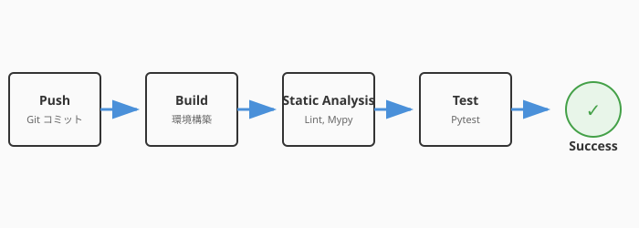

どれほど優れたテストスイートも、実行されなければ無意味です。
「テストを書いたのに、忙しくて実行しなかった」「誰かがテストを壊したまま気づかずマージしてしまった」——こうした事態を防ぐには、テストの実行を人間の意志に頼らず、自動化する必要があります。
テストを「手動で実行するもの」から「常に自動で守り続けるもの」に昇華させる——その仕組みがCI（継続的インテグレーション）です。
CI（Continuous Integration）とは、コードの変更がリポジトリにプッシュされるたびに、自動的にビルド・テストを実行する仕組みです。
次の図は、CIパイプラインの全体的な流れを示しています。

ここで注目したいのは、コードのプッシュからフィードバックまでの流れが完全に自動化されている点です。コードが変更されるたびに、ビルド・テスト・解析という「守護魔法」が自動発動し、品質ゲートを通過しなければマージが許可されません。このサイクルが高速に回ることで、問題はコードが書かれた直後に発見できます。
| 効果 | 説明 |
|---|---|
| 即座のフィードバック | コードを壊したら数分以内に通知される |
| 全テストの確実な実行 | 「テスト通すの忘れた」がなくなる |
| 安心してマージできる | CIが緑なら、少なくとも既存機能は壊れていない |
| チームの信頼基盤 | 全員が同じ基準で品質を確認できる |
最も手軽にCIを始められるのがGitHub Actionsです。リポジトリに設定ファイルを1つ置くだけで、プッシュのたびにテストが自動実行されます。
# .github/workflows/test.yml
name: QuestForge Tests
on:
push:
branches: [main]
pull_request:
branches: [main]
jobs:
test:
runs-on: ubuntu-latest
steps:
- uses: actions/checkout@v4
- name: Set up Python
uses: actions/setup-python@v5
with:
python-version: '3.12'
- name: Install dependencies
run: pip install -r requirements.txt
- name: Run tests
run: python -m pytest tests/ -vこの設定で、mainブランチへのプッシュまたはプルリクエストのたびに、以下が自動実行されます:
テストが自動実行される基盤が整ったところで、そのテストがどれだけのコードを網羅しているかをCI上で継続的に計測する仕組みを加えましょう。4.2節で学んだカバレッジを、CIで自動計測・レポート化できます。
- name: Run tests with coverage
run: |
pip install pytest-cov
python -m pytest tests/ --cov=src --cov-report=term-missing
- name: Check coverage threshold
run: |
python -m pytest tests/ --cov=src --cov-fail-under=80--cov-fail-under=80 を指定すると、カバレッジが80%未満の場合にCIが失敗します。これが品質ゲートです。
品質ゲートとは、「この基準を満たさなければマージを許可しない」という自動チェックです。
| ゲート | 基準例 | 目的 |
|---|---|---|
| テスト通過 | 全テストがパス | 既存機能が壊れていないことの保証 |
| カバレッジ閾値 | 80%以上 | テストの網羅性の最低基準 |
| 静的解析 | Lintエラーゼロ | 3.4節で学んだコード品質の維持 |
| 型チェック | Mypy通過 | 型の整合性 |
# 静的解析とテストを並列実行
- name: Lint
run: ruff check src/
- name: Type check
run: mypy src/
- name: Test
run: python -m pytest tests/ --cov=src --cov-fail-under=80GitHub上でプルリクエストを作ると、これらのチェックが自動で走り、すべて通過しなければマージボタンが押せないように設定できます（Branch Protection Rules）。
テストが増えるにつれ、実行時間が課題になります。効率的な実行戦略を設計しましょう。
| 分類 | 実行タイミング | 実行時間の目安 |
|---|---|---|
| 単体テスト | 毎回のプッシュ | 数秒〜数十秒 |
| 結合テスト | プルリクエスト作成時 | 数分 |
| E2E / システムテスト | マージ前、リリース前 | 数十分 |
jobs:
# 常に実行: 高速な単体テスト
unit-tests:
runs-on: ubuntu-latest
steps:
- uses: actions/checkout@v4
- run: python -m pytest tests/unit/ -v
# PRのみ実行: 結合テスト
integration-tests:
if: github.event_name == 'pull_request'
runs-on: ubuntu-latest
steps:
- uses: actions/checkout@v4
- run: python -m pytest tests/integration/ -v4.1節で学んだテストピラミッドの考え方が、ここでも活きます。土台（単体テスト）は常に・速く、上層（E2E）は必要なタイミングだけ実行します。
コラム: カオスエンジニアリング——本番環境の回復力テスト
CIパイプラインで守れるのは「コードが正しいか」までです。しかし、本番環境では「サーバーが突然落ちる」「ネットワークが不安定になる」といった予測困難な障害が起こります。
カオスエンジニアリングは、意図的に障害を注入し、システムの回復力を検証するアプローチです。Netflixが開発した「Chaos Monkey」は、本番環境のサーバーをランダムに停止させることで有名です。
- 原則: 「障害は必ず起こる。だから、制御された状況で先に経験しておく」
- 手法: プロセスの強制終了、ネットワーク遅延の注入、ディスク容量の枯渇シミュレーション
- 効果: 障害発生時のアラート・復旧手順が本当に機能するかを確認できる
これは第6章「進化する生命体（デプロイと運用）」で扱う運用の世界と深く関わります。テストの守りは、CIで終わりではなく、本番環境の回復力まで続いているのです。
CIはテストを「常時発動」にする仕組みです。プッシュのたびに自動でテストが走り、壊れた瞬間にフィードバックを受け取ることで、問題の発見を最大限に早期化できます。品質ゲートはこれをさらに一歩進め、テスト通過・カバレッジ閾値・静的解析を自動チェックし、基準未達のコードがマージされるのを防ぎます。
テストピラミッドに沿った実行戦略——単体テストは常に速く、結合テストはPR時に、E2Eはリリース前に——を守ることで、CIのフィードバックループを快適な速度に保てます。3.4節で学んだLinter・型チェッカーもCIに組み込み、コード品質を多角的に守ることが理想的な形です。
次の4.6節では、テストが検出した不具合の原因を突き止める技術——デバッグを学びます。名探偵のように証拠を辿り、バグの根本原因を発見する方法を探っていきましょう。
このプロジェクトの構成（pyproject.toml / requirements.txt 等）を読んで、
QuestForge 用の GitHub Actions ワークフローを生成し、
.github/workflows/ci.yml として保存してください。
要件：
- Python 3.12 を使用
- pytest でテストを実行（カバレッジ80%以上を品質ゲートに設定）
- ruff で Lint チェック
- mypy で型チェック
- プッシュ時とプルリクエスト時に自動実行tests/ ディレクトリ全体を走査して、以下を行ってください。
1. 各テストファイルを「単体テスト・結合テスト・E2Eテスト」に自動分類し、
現在の実行時間の見積もりを算出する
2. 分類に基づき、pytest-xdist を使った並列化戦略を提案する
3. .github/workflows/ci.yml に並列化設定を追記する執筆メモ: